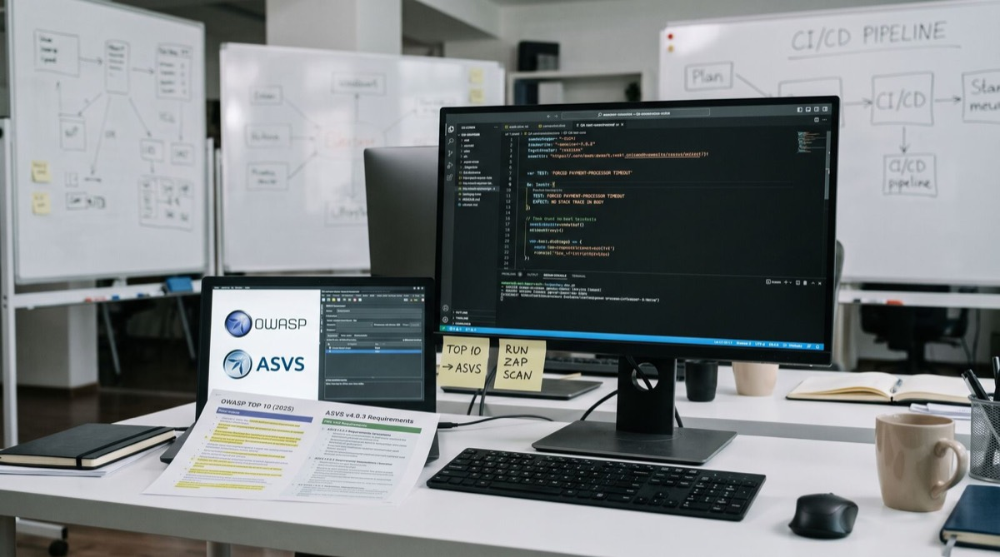

OWASP za QA: kako Top 10 i ASVS pretvoriti u konkretne test slučajeve
„Testirajte za OWASP" je nejasno uputstvo. Evo kako se Top 10, ASVS i ZAP uklapaju u test slučajeve koje QA inženjer zaista može da izvrši.
„Pobrinite se da smo pokriveni za OWASP Top 10" česta je rečenica u bezbjednosnom pregledu ili zahtjevu klijenta, ali sama po sebi ne govori mnogo o tome šta treba uraditi. Top 10 je rangirana lista kategorija rizika, a ne skup test slučajeva. Da bi se pretvorio u nešto što QA inženjer bez bezbjednosnog iskustva zaista može da izvrši, potrebno je uključiti ostatak OWASP ekosistema: Application Security Verification Standard (ASVS) za konkretne zahtjeve podijeljene po nivoima, Testing Guide i Cheat Sheets za to kako se svaki od njih provjerava, i skener poput ZAP-a za dijelove koje se isplati automatizovati. Svaki od ovih dijelova je, sam za sebe, ili previše apstraktan ili preuzak. Zajedno čine proces koji funkcioniše.

Tri dijela koja rade različite poslove
Top 10 vam govori šta da prioritizujete. Aktuelna lista (2025) zadržava Broken Access Control na vrhu, a Security Misconfiguration pomjera na drugo mjesto. Uvodi i dvije kategorije koje ranije nisu bile ovako formulisane: Software Supply Chain Failures, koja stariju kategoriju „ranjivih komponenti" proširuje na širi pogled na rizik od trećih strana i build pipelinea, i Mishandling of Exceptional Conditions, koja pokriva bezbjednosne propuste nastale zbog lošeg rukovanja greškama, kao što su opširni stack traceovi ili nebezbjedna fallback logika. Top 10 je koristan za odluku gdje potrošiti ograničeno vrijeme za testiranje, ali ne i za pisanje ijednog konkretnog test slučaja.
ASVS pretvara kategorije rizika u zahtjeve koje možete da štiklirate. Organizovan je u 14 poglavlja (V1 do V14, koja pokrivaju autentifikaciju, upravljanje sesijama, kontrolu pristupa, kriptografiju, rukovanje greškama i logovanje, bezbjednost API-ja i slično) na tri nivoa verifikacije. Nivo 1 je osnovni nivo koji se u potpunosti može provjeriti običnim penetracionim testiranjem. Nivo 2, koji OWASP preporučuje za većinu aplikacija koje rade sa bilo čim osjetljivim, dodaje zahtjeve za koje je obično potreban i pregled koda ili dizajna pored testiranja. Nivo 3 je za aplikacije kod kojih otkaz ima ozbiljne posljedice, kao što su obrada plaćanja ili zdravstveni podaci. Verzija 4.0.3 ima ukupno 286 pojedinačnih zahtjeva, a OWASP-ove smjernice su eksplicitne: ne pokušavajte da implementirate ili provjerite sve njih za svaku aplikaciju. Izaberite nivo na osnovu onoga s čim aplikacija zaista radi, pa prođite kroz poglavlja koja su za nju bitna.
Testing Guide, Cheat Sheets i ZAP su mjesto gdje „provjeri ovaj zahtjev" postaje stvarni test. Cheat Sheets daju tehničke detalje za konkretnu kontrolu (kako izgleda bezbjedna konfiguracija session kolačića, šta čuvanje lozinki treba, a šta ne smije da radi). ZAP je skener koji može automatski da izvrši dio provjera, što je bitno jer ručna verifikacija 286 zahtjeva po izdanju za većinu timova nije realna.
Primjer iz prakse: jedan ASVS zahtjev, jedan test slučaj
Uzmite novu Top 10 kategoriju, Mishandling of Exceptional Conditions, i ASVS poglavlje o rukovanju greškama i logovanju (V7 u verziji 4.0.3), koje zahtijeva da odgovori na greške ne otkrivaju interne detalje implementacije. Konkretan test slučaj za billing API mogao bi da izgleda ovako:
Test: Forced payment-processor timeout does not leak internals
Setup: point the payment gateway client at an unreachable endpoint
(or use a test double configured to time out)
Action: POST /api/v1/charges with a valid request body
Expect:
- HTTP response body contains no stack trace, file path,
SQL fragment, or internal hostname/IP
- HTTP response body contains a generic error code
(e.g. "PAYMENT_PROCESSOR_UNAVAILABLE"), not the raw exception message
- The full exception IS present in the server-side log,
with enough context to debug it internallyOvo je jedna konkretna, ponovljiva provjera, i upravo je to vrsta testa koju QA inženjer može da napiše bez dubokog bezbjednosnog znanja, kada mu odgovarajući ASVS zahtjev pokaže šta treba provjeriti. Isti obrazac — izaberi jednu Top 10 kategoriju, pronađi odgovarajuće ASVS poglavlje, napiši jedan ili dva testa za konkretne zahtjeve — primjenjuje se i na kontrolu pristupa, autentifikaciju ili validaciju ulaza, bez potrebe da se „bezbjednosno testiranje" posmatra kao jedan neizdiferenciran zadatak.
Gdje se uklapa automatizacija
ZAP baseline skeniranje, pokrenuto nad staging okruženjem kao dio CI-ja, razuman je prvi prolaz za stvari koje ne zahtijevaju razumijevanje poslovne logike: nedostajuća bezbjednosna zaglavlja, zastarjele biblioteke sa poznatim CVE-ovima, kolačići bez odgovarajućih flagova i slični problemi na nivou konfiguracije. GitHub Action zaproxy/action-baseline ili aktuelni ghcr.io/zaproxy/zaproxy kontejner su održavani način da se ovo pokrene (stari owasp/zap2docker-stable image više nije preporučeni put). Ono što neće uhvatiti je sve što zavisi od znanja šta podaci treba da znače: korisnik koji može da vidi fakturu drugog tenanta promjenom ID-ja u URL-u skeneru izgleda kao potpuno normalan, ispravno formiran zahtjev. Broken access control, najčešća Top 10 kategorija, uglavnom se otkriva test slučajevima napisanim uz poznavanje modela podataka aplikacije, a ne automatskim skeniranjem.
Zamke i ograničenja
Prolazak kroz Top 10 checklistu nije isto što i bezbjednost; to je prioritizovana lista čestih kategorija rizika, a ne iscrpna lista, i mnogi stvarni incidenti padaju van nje. Tretiranje ASVS-a kao štikliranja svih 286 zahtjeva troši vrijeme koje bi moglo da ode na šačicu zahtjeva koji su zaista relevantni za nivo rizika vaše aplikacije. Zeleno ZAP skeniranje ne govori ništa o propustima u poslovnoj logici kao što su broken access control ili manipulacija cijenom kroz skrivena polja forme, pa će tim koji „skener je čist" uzima kao definiciju bezbjednosti propustiti upravo one probleme koji izazivaju najgore incidente. A Software Supply Chain Failures, najnovija kategorija, uopšte nije nešto što periodični test prolaz može da zadovolji; za nju je potrebno kontinuirano praćenje zavisnosti i build pipelinea, što je potpuno drugačija vrsta kontrole od test slučaja.
Šta dalje
- Za svaku aplikaciju izaberite ASVS nivo na osnovu onoga s čim zaista radi (javni marketinški sajt naspram aplikacije koja čuva podatke o plaćanju ili zdravstvene podatke) i čitajte samo poglavlja relevantna za taj nivo, a ne cijeli dokument.
- U ovom sprintu uzmite jednu Top 10 kategoriju i jedan ili dva odgovarajuća ASVS zahtjeva pretvorite u stvarne, ponovljive test slučajeve, umjesto da pokušavate da odjednom pokrijete cijelu listu.
- Dodajte ZAP baseline skeniranje u CI kao prvi prolaz za probleme na nivou konfiguracije i njegove nalaze usmjerite u svoj uobičajeni backlog, umjesto da čisto skeniranje tretirate kao bezbjednosno odobrenje.
- Kada izađe nova verzija, ponovo procijenite koje se Top 10 kategorije odnose na vaše sisteme; lista iz 2025. dodala je rizike lanca snabdijevanja i rukovanja izuzecima koje mnogi postojeći test planovi još ne pokrivaju.
Za konkretne bezbjednosne scenarije pogledaj članke Testiranje BOLA propusta i izolacije tenanata, Testiranje uploada fajlova: granični slučajevi i PHP2Shell i rupe u standardnoj QA praksi.